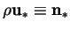
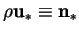

Meyer and Kostin (1975) considered a system similar to the Stefan diffusion tube, except that it was two-dimensional (planar). They formulated an approximate model and solved the resulting equations numerically.
Their model omits the inertial terms from the equation of motion, which is inconsistent with the inclusion of the advective terms in the species equation, since the ratio of the magnitudes of these is obviously the reciprocal of the Schmidt number, which is of order unity for most gas-vapour mixtures.
The correct approach would have been an asymptotic expansion for small
values of  . The velocity vanishes in the limit
. The velocity vanishes in the limit
 . The zeroth order approximation for the
species would then be Laplace's equation, with the simple solution
that
. The zeroth order approximation for the
species would then be Laplace's equation, with the simple solution
that  would be a linear function of the height above the liquid
surface. This could then be used to calculate the boundary conditions
for the first order velocity correction, leading to a Stokes problem
with uniform inflow and outflow at the vapour source and sink. The
resulting velocity field can be used in an advection-diffusion
equation for the first order correction to the vapour mass fraction
field, and so forth. At each stage the velocity and vapour mass
fraction fields are uncoupled. Each correction to the vapour mass
fraction influences the boundary conditions for the next correction to
the velocity field, and each correction to the velocity field enters
into the advection terms in the equation for the next correction to
the vapour mass fraction.
would be a linear function of the height above the liquid
surface. This could then be used to calculate the boundary conditions
for the first order velocity correction, leading to a Stokes problem
with uniform inflow and outflow at the vapour source and sink. The
resulting velocity field can be used in an advection-diffusion
equation for the first order correction to the vapour mass fraction
field, and so forth. At each stage the velocity and vapour mass
fraction fields are uncoupled. Each correction to the vapour mass
fraction influences the boundary conditions for the next correction to
the velocity field, and each correction to the velocity field enters
into the advection terms in the equation for the next correction to
the vapour mass fraction.
Nevertheless, their conclusion that nonzero values of the mass transfer rate
factor,  , must lead to circulation of the gas is correct: in 1967,
Whitaker showed that a stagnant gas
(i.e.
)
is not consistent with the presence
of nonslip boundaries joining the vapour source and sink.
The circulation was confirmed by the rigorous numerical solutions of Markham
and Rosenberger (1980; reviewed in §3.2.3).
, must lead to circulation of the gas is correct: in 1967,
Whitaker showed that a stagnant gas
(i.e.
)
is not consistent with the presence
of nonslip boundaries joining the vapour source and sink.
The circulation was confirmed by the rigorous numerical solutions of Markham
and Rosenberger (1980; reviewed in §3.2.3).
There is also some confusion in Meyer and Kostin's use of both mass and molar quantities. Their expressions for the molar fluxes contain the mass average velocity, whereas they should use the molar average velocity (see Bird et al. 1960, pp. 496-502 for consistent formulations). Gross error is avoided, however, since both the total density and the total molar concentration are assumed uniform. This is equivalent to an assumption of equal molar masses. If the molar masses of the stagnant and diffusing species are equal, mass fractions and mole fractions are identical and very little is gained from this mixed formulation.
It would seem that in any vapour transport problem except for the most hydrodynamically trivial, such as one-dimensional Stefan diffusion (Bird et al. 1960, pp. 522-7), a momentum equation must be solved, which must be formulated in terms of a mass average velocity, as Newton's Law of Viscosity is (Bird et al. 1960, pp. 79-80, 565). The molar fluxes involve the molar average velocity, which can only be simply expressed in terms of the mass average velocity in the special case of equal molar masses. Indeed, `if the molecular weights...are significantly different, the problem takes on an appalling complexity'; the two average velocities not even being parallel in general (Rao, S. S. & Bennett 1967). It was for these reasons that a consistently mass-based formulation was used in chapter 2. A mass-based formulation was also adopted by Markham and Rosenberger (1980) and Greenwell et al. (1981) who fully accounted for differing molar masses; i.e. did not use the Boussinesq approximation.